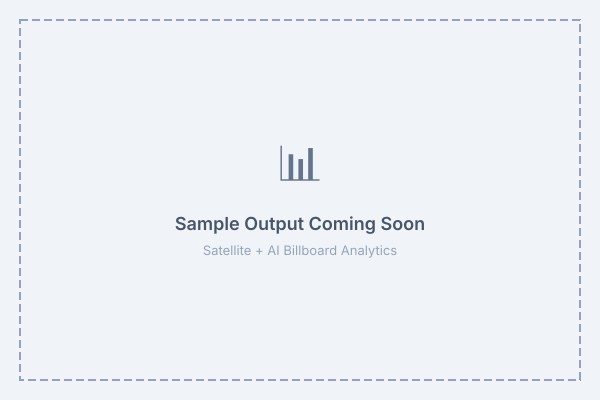

Independently verify your outdoor advertising campaigns with real vehicle counts, pedestrian flow, and dwell-time analytics — captured from space, computed with AI. No SDK, no GPS, no beacon required. Built for multinational brands, OOH agencies, retail chains, and enterprise advertisers across Bangladesh.
Six independent metrics per billboard, per campaign period
Cars, trucks, buses and motorbikes passing per hour — AI-detected from high-resolution satellite imagery.
Foot-traffic density estimation around the billboard's impression cone.
Average visibility duration based on speed × line-of-sight geometry.
Configurable 100m / 250m / 500m impression zones per billboard type.
Weekday · weekend · hourly patterns to optimize creative rotation timing.
Density map of neighboring billboards — share-of-voice benchmarking.
From coordinates to audit report in under 48 hours
Send billboard coordinates + campaign dates via CSV or KML.
High-resolution satellite (WorldView · Planet · Sentinel) for the campaign window.
Computer-vision models detect vehicles & pedestrians in the impression cone.
PDF audit + CSV time-series + PNG heatmaps for your media buyers.
Real dashboards from client deployments (samples anonymized)

Hourly vehicle counts around a billboard cluster, overlaid on satellite imagery.
Daily impression counts across a 30-day campaign period.
Share-of-voice map showing your billboards vs competitor OOH density.
Multinational brands · OOH agencies · Corporate advertisers
— media-buy verification across Bangladesh.
Kinetic, JCDecaux, Clear Channel and local networks — campaign delivery reports.
— outlet visibility scoring.
— foot-traffic pre-purchase analysis.
— nationwide brand-presence audit.
Bank — branch-visibility and campaign ROI.
Not sold or benchmarked by the media owner — third-party verification you can trust.
Retrospective audit of any past campaign — satellite archives go back years.
No beacon, SDK, GPS or mobile app permission required from consumers.
Audit 1,000+ billboards in a single report — nationwide in one click.
Visibility automatically discounted on foggy / rainy days for accurate impression counts.
Audit-ready PDF reports · CSV data export · API integration for BI dashboards.
Free pilot audits available for multinational advertisers, OOH agencies, and enterprise clients. Share your billboard portfolio and campaign dates — we'll deliver the first audit within 48 hours. Contact us for enterprise pricing.